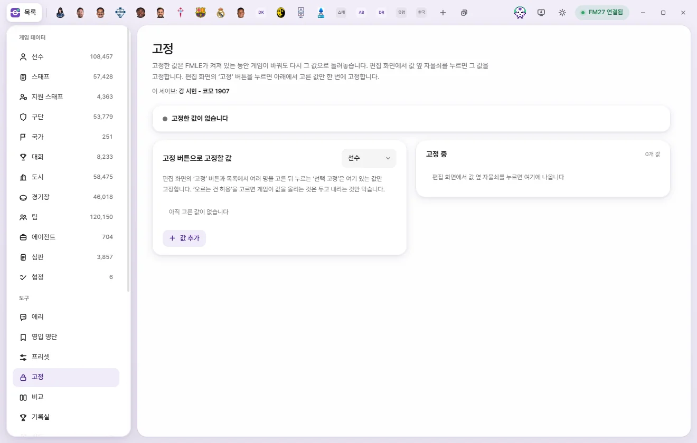

Tools
Locks
Locked values stay put while FMAX is running—whenever the game changes them, FMAX writes them back. Lock individual values with the padlock icon, or lock a preselected set all at once with the 'Lock' button.


How Locks work
While FMAX is running, it checks your locked values against the game at a set interval (1 second by default). Whenever the game changes a locked value, FMAX writes the locked value back.
- Checks run regardless of the game date—Locks keep working even while the game is paused or idle.
- Values are protected only while FMAX is running. Once you quit FMAX, the game can change them freely.
- Unlocking a field leaves the game value at whatever it is at that moment.
- Locks are remembered separately for each save (What FMAX remembers per save). 'Current save: …' at the top of the screen shows which save the current list belongs to.
Locking a single value: the padlock
- In an edit tab, hover over a value row to reveal a padlock icon next to the number (tooltip: 'Lock this value').
- Click the padlock to lock it at the value currently read from the game. The icon switches to a closed padlock.
- Click it again to unlock it.
Once locked, a field's padlock stays visible in the accent color even when your cursor isn't over the row.
- Only numeric values have padlocks; fields that cannot be locked don't show one.
- Before a tab has read data from the game, FMAX lets you know that you can lock values once they have been read from the game.
- If you edit a field and click its padlock before saving, FMAX locks the current game value first; once you press 'Save', the locked value updates to your new value.
- If you edit and save a locked value in a tab, or change it with a preset or the Game editor, the locked value automatically updates to follow the new value.
Locking multiple values at once: the 'Lock' button
The Lock button (padlock icon) at the top right of an edit tab locks all the fields configured under 'Values for the Lock button' on the Locks screen at their current game values in one go. Click it again to unlock those fields. When every configured field is locked, the button lights up.
If you haven't chosen any fields yet, FMAX shows a notice asking you to pick values first along with an 'Open lock settings' button.
Locking multiple people
- Select multiple rows in a list and 'Lock selected' appears in the bottom bar.
- 'Lock values' in the right-click menu (or 'Lock values for N' with multiple items selected) does the same thing.
Clicking either opens a 'Lock N' confirmation prompt listing the N configured fields to lock at their current game values. Confirming reads the values from the game and locks them. Both buttons only appear when at least one field is configured on the Locks screen.
The Locks screen
Click Locks in the left tools list or 'Locks N' in the top bar of the window to open the Locks screen.
Status bar and buttons
| Status | Meaning |
|---|---|
| No locked values | Nothing is currently locked |
| Active — keeping game values locked | Running normally |
| Paused — game values aren’t being kept | You clicked 'Pause all'. Your list is still kept |
| Waiting for game (…) | Not connected to the game, or a save is loading |
On the right of the status bar, 'Rewritten N times · Checking every Ns' shows how many times FMAX has reverted changes made by the game so far.
- Pause all / Resume: Pauses or resumes enforcement while keeping your list of locked values intact.
- Unlock all: Empties the entire list after a confirmation prompt ('Unlock all N locked values? Current game values will stay as they are.').
Values for the Lock button
Pick a type (Player, Staff, Club, etc.) at the top right to choose which fields the 'Lock' button and 'Lock selected' will lock for that type.
- Click 'Add value' and pick a field, or click 'All in group' next to a group heading to add every field in that group.
- Choose a mode for each row:
- Keep exact value: Reverts the value whether the game raises or lowers it.
- Allow increases: Lets the game raise the value and only blocks drops. Whenever the value goes up, the locked value moves up to match it.
- Click the trash button to remove a row.
For players, Injury Proneness and Dirtiness are included by default—feel free to change them.
Currently locked
Active locks are listed grouped by person or club.
- Open next to a name: Opens that item's tab.
- Unlock all: Unlocks every field on that person or club.
- Value chips: Shown as 'Field name value', with '↑ allowed' added when set to 'Allow increases'. Click × on a chip to unlock just that field.
Items not found in game
If FMAX can't find a locked person or club in the game, 'Not found in game' appears next to them in the 'Currently locked' list, the status bar notes 'N not found', and the 'Locks N' badge at the top of the window switches to a warning color.
This can happen if you loaded a different save or the item no longer exists in the game. FMAX keeps checking for missing items and resumes protecting them automatically if they reappear. If you no longer need them, remove them with 'Unlock all'.
Check interval
Under 'Lock check interval' in Settings, choose 0.5s, 1s, 2s, or 5s. Shorter intervals revert changes faster whenever the game modifies a value.
The 'Locks N' indicator in the top bar
Whenever at least one value is locked, a padlock and 'Locks N' (or 'Locks N · Stopped' when paused) appear at the top of the window. Hover to check the current status, or click to open the Locks screen. A count also appears next to 'Locks' in the left tools list.
When you reopen FMAX
When 'Restore previous state on startup' is enabled in Settings (the default), Locks that were active when you closed FMAX turn back on automatically—once FMAX checks which save is open in FM27, it activates only the locks belonging to that save. If you turn that setting off, Locks start paused instead.